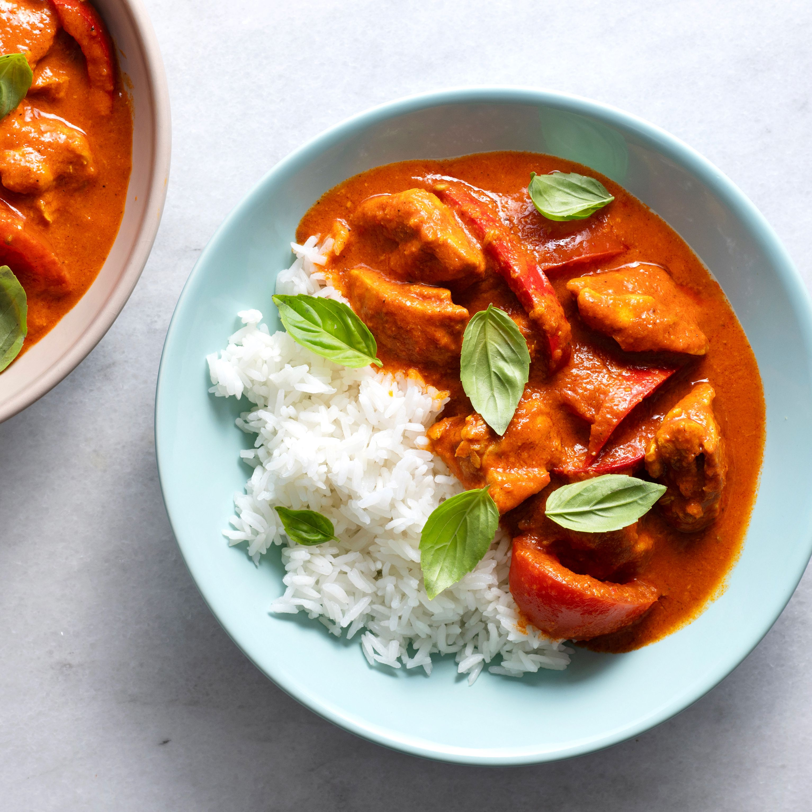

Panang Curry

Description
Panang Curry is a delicious and creamy red curry originating from Malaysia. Kaffir lime leaves are what give this curry a unique flavor.
The curry is typically served with rice and garnished with Thai basil leaves.
Ingredients
- Panang curry paste
- Coconut milk
- Minced garlic
- Kaffir lime leaves
- Diced chicken
- Diced onion
Steps
- Saute onion and garlic.
- Add curry paste.
- Stir in coconut milk.
- Add chicken and lime leaves and let simmer 10 minutes.
- Serve over rice.